|
Advertencia: las zonas de mapas de fin de juego son mucho más difíciles que el resto del contenido y requieren builds extremadamente bien definidas. Se accede a las zonas de mapas de fin de juego transmutando los objetos de mapa por sí solos en el Acto 5 en Infierno. Hay un total de 18 objetos de mapa repartidos en 5 niveles. Cada nivel tiene 4 zonas de mapa distintas, excepto el nivel 5, que solo tiene 2 mapas con enfrentamientos contra jefes únicos y extremadamente difíciles. Los objetos de mapa pueden soltarlos los superúnicos del dominio de Nihlathak. Cada jefe superúnico tiene un 5 % de probabilidad de soltar un mapa de nivel 1. Los objetos de mapa también pueden soltarlos los campeones y los monstruos únicos en zonas aterrorizadas de nivel 96. Los objetos de mapa también se pueden conseguir como botín poco común en las propias zonas de mapas de fin de juego, que será tu fuente principal si haces mapas con regularidad Los monstruos normales de los mapas pueden soltar un mapa de un nivel superior al del mapa en el que mueren. También puedes mejorar mapas en proporción 3:1. Para sobrevivir, se recomienda que tu build tenga al menos 5000 de vida, resistencias al máximo, algo de resistencia física y otras capas defensivas. Las recompensas expresadas en probabilidad media pueden aumentar hasta un 100 % con /players 8. Por ejemplo, un Antiguo tiene un 50 % de probabilidad de obtener una llave, y lo tira dos veces, así que de media consigues una llave, pero subir a 8 jugadores le da casi un 100 % de probabilidad de soltar 2 llaves. Los mapas de fin de juego pueden aterrorizarse, y en cada momento hay un mapa aterrorizado por nivel (salvo el nivel 5, cuyos dos mapas se aterrorizan a la vez, independientemente de los demás). Los mapas de fin de juego también pueden aterrorizarse en Normal y Pesadilla, pero no es intencionado. No se puede corregir por limitaciones del motor. Los jefes aterrorizados siempre sueltan un Fragmento de la Piedra del Mundo (excepto los jefes de nivel 5, por una limitación del motor). |
| Jefe | Descripción/Recompensas |
|
Susurro de Lucion - Cámara del Dolor 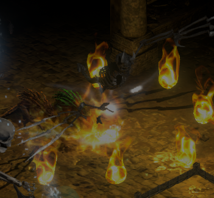 |
De las profundidades abisales de los Infiernos Abrasadores surge el Susurro de Lucion, un heraldo espectral de la voluntad de su amo. Sombra envuelta en fuego sobrenatural, no es del todo demonio ni del todo espectro, sino un eco maldito de la propia esencia de Lucion. Fuegos eternos - El Susurro de Lucion puede invocar fuegos que duran 30 segundos e infligen una cantidad descomunal de daño de fuego. Maldición debilitante - El Susurro de Lucion puede lanzar una maldición sobre el suelo. Si te alcanza el área, quedas petrificado y tu resistencia al fuego se reduce un 150 %. Teletransporte - El Susurro de Lucion puede teletransportarse al recibir daño, lo que lo hace impredecible. Recompensas Orbe de Unción (5 % de probabilidad de media) Mapa de nivel 2 (25 % de probabilidad de media) Llave del Pandemonium aleatoria (25 % de probabilidad de media) Otros objetos/materiales genéricos |
|
El Perro de Caza de Diablo - Abismo del Horror 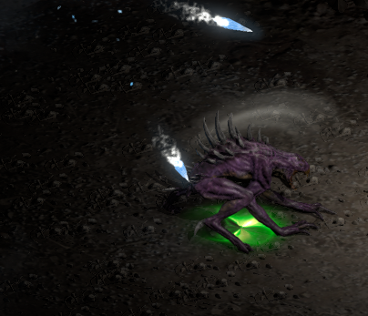 |
De los fosos ennegrecidos de los Infiernos Abrasadores surge el perro infernal personal de Diablo. Más que simple carne y colmillos, es una pesadilla viviente, una manifestación de la ira sin límites del Mal Mayor. Frenesí - El perro infernal de Diablo entra en frenesí y gana velocidad de ataque y de movimiento con cada ataque. Hechizo al atacar - El perro infernal de Diablo puede desatar un hechizo mortal al atacar a su presa. Los hechizos posibles son un Meteoro normal, un Orbe Congelado devastador cuyos proyectiles de hielo buscan a los jugadores cercanos, un Espíritu Óseo perforante y una maldición que ralentiza al objetivo y reduce sus resistencias elementales un 100 % y su resistencia a la magia un 50 %. Recompensas Orbe de Unción (5 % de probabilidad de media) Mapa de nivel 2 (25 % de probabilidad de media) Llave del Pandemonium aleatoria (25 % de probabilidad de media) Otros objetos/materiales genéricos |
|
Ángel Caído Antiguo - Necrópolis 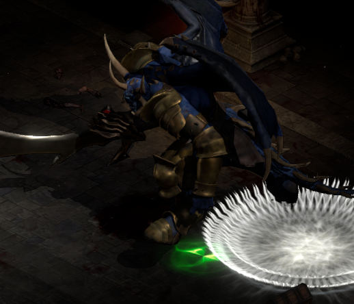 |
Antaño un guerrero radiante de los Altos Cielos, este Ángel Caído Antiguo vaga ahora por el vacío, una reliquia abandonada de la guerra celestial. El tiempo le ha arrebatado su brillo y su armadura, antes reluciente, está manchada con el hollín de reinos destrozados. Donde antes unas alas doradas lo llevaban sobre la luz divina, ahora cuelgan restos andrajosos, chamuscados por los fuegos de la condenación. Nova de aniquilación - El Ángel Caído Antiguo lanza de vez en cuando una nova devastadora que inflige daño físico y mágico. La nova se expande lentamente y rebota una vez al chocar con cualquier superficie, así que es muy recomendable esconderse en otra sala mientras ocurre. Tormenta de bolas de rayo - El jefe lanza de vez en cuando, al atacar o al recibir daño, una tormenta de bolas de rayo que estallan en varios rayos cargados. Enfurecimiento - El jefe tiene de media un 10 % de probabilidad de enfurecerse al recibir daño, obteniendo la velocidad de ataque máxima durante un breve periodo. Recompensas Orbe de Unción (5 % de probabilidad de media) Mapa de nivel 2 (25 % de probabilidad de media) Llave del Pandemonium aleatoria (25 % de probabilidad de media) Otros objetos/materiales genéricos |
|
Terror En Las Sombras - Guarida Infestada 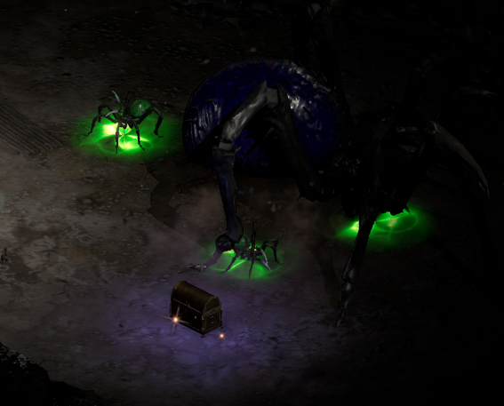 |
En lo más profundo de la tierra, donde el aire se espesa por la putrefacción y cosas invisibles corretean tras el velo de la oscuridad, acecha un horror antiguo que ha tejido su dominio a partir del miedo mismo. Ataque Saltar - La araña gigante salta de vez en cuando sobre víctimas desprevenidas e inflige daño en área. Lanzar crías de araña - El jefe puede lanzar un puñado de crías de araña con un ataque venenoso mortal que además pueden hacer ataques en salto por su cuenta. Escupitajo de telaraña - El jefe lanza cada 4 segundos una bola de telaraña venenosa mortal. La bola reduce la velocidad de movimiento y la resistencia al veneno del objetivo un 150 % y su velocidad de ataque y de lanzamiento un 50 %. Recompensas Orbe de Unción (10 % de probabilidad de media) Mapa de nivel 3 (25 % de probabilidad de media) Llave del Pandemonium aleatoria (35 % de probabilidad de media) Otros objetos/materiales genéricos |
|
Jefes dobles - Ruptura del Caos 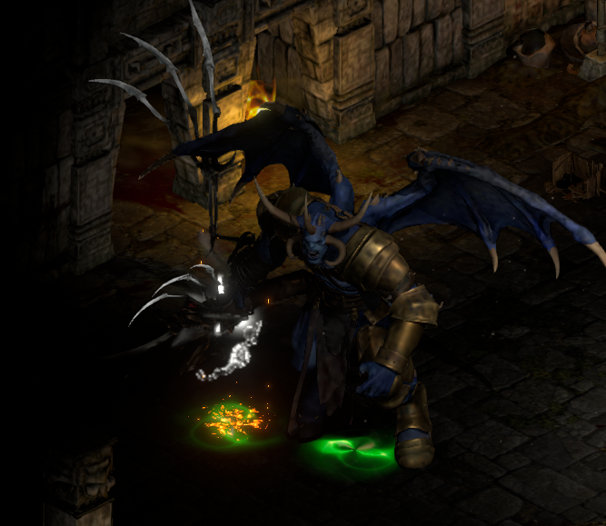 |
La ruptura caótica es muy inestable, lo que debilitó el tejido del espacio-tiempo y permitió que dos jefes de mapas de nivel 1 se encontraran juntos. Los jefes son idénticos a sus equivalentes de los mapas de nivel 1 y usan las mismas habilidades. La dificultad aumenta porque tienes que luchar contra los dos a la vez en un espacio pequeño. Recompensas (por cada jefe) Orbe de Unción (5 % de probabilidad de media) Mapa de nivel 2 (25 % de probabilidad de media) Llave del Pandemonium aleatoria (25 % de probabilidad de media) Otros objetos/materiales genéricos |
|
Avatar de la Noche - Laberinto del Sufrimiento 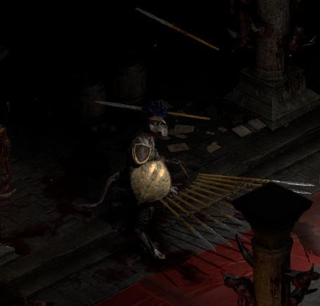 |
Cuando el sol se apaga y desciende el velo de la noche, despierta. Sombra entre sombras, el Avatar de la Noche se mueve con el silencio de una pantera al acecho, y su forma de obsidiana se funde a la perfección con el abismo. Abalanzarse - El avatar intentará de vez en cuando emboscarte saltando sobre ti y debilitándote con un efecto de locura que reduce tu resistencia física un 100 % y tu resistencia al frío un 150 %. Sin embargo, el efecto te pone en un estado rabioso que aumenta tu velocidad de ataque, de lanzamiento y de movimiento un 100 %. Ráfaga de jabalinas - El ataque principal del jefe es una ráfaga de jabalinas que inflige daño híbrido físico/de frío y puede rebotar hacia jugadores cercanos, incluso después de chocar con una pared. Nova de frío convergente - Cuando está cerca de ti, el jefe lanza una nova de proyectiles de hielo que se pegan a las paredes y buscan a los jugadores cercanos tras un breve periodo, así que corre. También puede lanzar esta habilidad al recibir daño. Pasivas - El jefe tiene una probabilidad pasiva de golpe mortal y golpe aplastante al atacar. Recompensas Orbe de Unción (10 % de probabilidad de media) Mapa de nivel 3 (25 % de probabilidad de media) Llave del Pandemonium aleatoria (35 % de probabilidad de media) Otros objetos/materiales genéricos |
|
Heraldo de la Perdición - Abismo Infinito 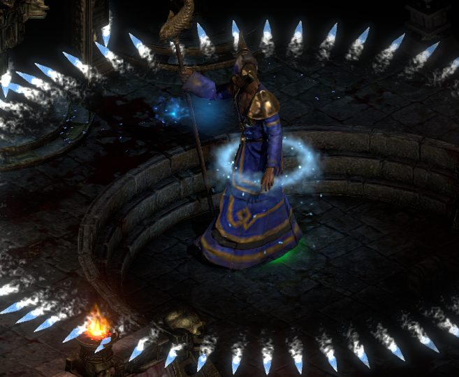 |
Hace mucho, antes de que la corrupción ennegreciera su alma, caminó entre los Horadrim: un erudito del conocimiento prohibido, un buscador de la verdad en las sombras de la creación. Pero la sabiduría es un arma de doble filo, y aquel al que ahora llaman el Heraldo de la Perdición vio demasiado. Contempló el abismo del poder elemental, no como un guardián prudente, sino como un discípulo dispuesto. Y, a cambio, el abismo le devolvió la mirada. Lluvia de perdición - El horadrim corrupto hace caer de vez en cuando una lluvia de meteoros sobre sus enemigos, y cada meteoro inflige un daño físico y de fuego devastador. Tormenta eléctrica - El jefe invoca a veces un anillo de bolas de rayo que acaban convirtiéndose en rayos mortales que buscan a los enemigos cercanos, así que es imprescindible correr en cuanto las veas. Ráfaga de hielo - El jefe también puede invocar novas de proyectiles de hielo que no infligen daño directo, sino que se pegan a las superficies y buscan a los jugadores cercanos tras un breve retraso. Espiral de meteoros - Cuando alguien es lo bastante insensato como para acercarse al hechicero, este lanza una espiral de meteoros devastadores. Pasivas - El hechicero horadrim perfora las resistencias elementales un 100 %, así que asegúrate de superar con creces su máximo antes de enfrentarte a él. Recompensas Orbe de Unción (15 % de probabilidad de media) Mapa de nivel 4 (25 % de probabilidad de media) Llave del Pandemonium aleatoria (50 % de probabilidad de media) Otros objetos/materiales genéricos |
|
Behemoth Glacial - Tierras Heladas (Descenso norte) 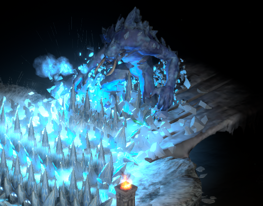 |
Las leyendas hablan de una época en que los Horadrim intentaron encarcelar una gran fuerza elemental, temiendo que su poder puro y desenfrenado pudiera desafiar incluso a los Males Mayores. Pero el hielo no muere. No se desvanece. Espera. Y cuando los sellos de su prisión se rompieron, el Behemoth Glacial se alzó de nuevo, con un aliento que es una tormenta de escarcha afilada y unos pasos que agrietan la tierra bajo una avalancha de muerte. Permafrost - El behemoth intenta invocar cuerpo a cuerpo una avalancha de hielo mortal que deja tras de sí fuegos helados, los cuales infligen durante 30 segundos una cantidad descomunal de daño de frío y físico. Congelación permanente - Al recibir daño, puede lanzar una maldición petrificante que reduce tu resistencia al frío un 150 %, tu velocidad de movimiento un 500 % y tu velocidad de lanzamiento y de ataque un 200 %. Cargar - Al recibir daño, el jefe puede cargar contra el objetivo a una velocidad descomunal, acortando la distancia contigo. Perturbar - El jefe emite un aura misteriosa que impide que funcionen tus habilidades de teletransporte. Recompensas Orbe de Unción (15 % de probabilidad de media) Mapa de nivel 4 (25 % de probabilidad de media) Llave del Pandemonium aleatoria (50 % de probabilidad de media) Otros objetos/materiales genéricos |
|
El Maestro de Tareas - Tierras Heladas (Descenso sur) 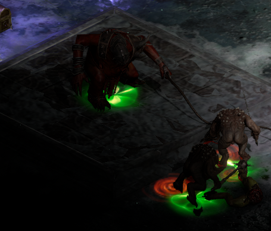 |
Envuelto en cadenas que atan no solo la carne sino también las almas, no lucha solo. Con una orden gutural invoca a los malvados, rasgando el velo entre mundos para desatar legiones de demonios, cada uno atado a su voluntad de hierro. Pero no se limita a enviarlos a la batalla: los empuja, y su mera presencia enciende la locura en sus esbirros y los lleva más allá del dolor, más allá del miedo, más allá de la propia muerte. Invocar esclavos sedientos de sangre - El Maestro de Tareas invoca periódicamente demonios sedientos de sangre de las profundidades del infierno para que lo ayuden en combate. Los esbirros son inmunes a todo el daño y sus inmunidades se deben romper por los medios habituales. Furia sanguinaria - El jefe intenta enfurecer a sus esbirros, ya sea otorgándoles durante 6 segundos una mejora que los cura a una velocidad descomunal y les da daño y velocidad de ataque y de movimiento, o convirtiéndolos en esclavos suicidas. Esclavos suicidas - Los esclavos suicidas persiguen a los jugadores e intentan explotarles en la cara. Si un jugador los mata directamente, estallan en una lluvia de fuego extremadamente devastadora que inflige daño físico y de fuego, y liberan una calavera ígnea mortal que persigue a su objetivo e inflige un daño de fuego letal. Perturbar - El jefe emite un aura misteriosa que impide que funcionen tus habilidades de teletransporte. Recompensas Orbe de Unción (15 % de probabilidad de media) Mapa de nivel 4 (25 % de probabilidad de media) Llave del Pandemonium aleatoria (50 % de probabilidad de media) Otros objetos/materiales genéricos |
|
El Heraldo Desfigurado de Destrucción de Baal - Santuario de la Destrucción 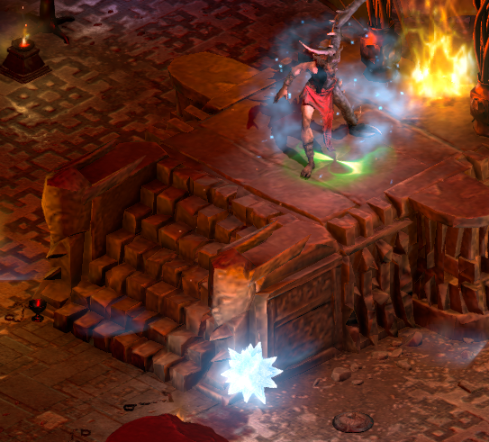 |
Antaño fue un siervo leal y devoto del Señor de la Destrucción, un heraldo elegido para sembrar la ruina en nombre de Baal. Durante un instante fugaz se atrevió a cuestionar, a dudar ante el decreto de Baal. Y por ello fue deshecho y rehecho; no fue destruido, sino condenado a sufrir, remodelado por la ira sin límites de su amo. Baal no le concedió la muerte, sino una lección, una cicatriz eterna, un recordatorio grotesco de lo que les ocurre a quienes desafían al Señor de la Destrucción. Novas de frío teledirigidas de la destrucción - El antiguo siervo de Baal suele lanzar un orbe de hielo mortal que esparce proyectiles de hielo. Al principio, los proyectiles quedan suspendidos en el aire un breve periodo, y luego buscan atravesar a los jugadores cercanos a una velocidad altísima. Tormenta de rayos de Baal - El heraldo de la destrucción se adentró en el poder arcano de los altos ángeles y aprendió a lanzar, rara vez, una tormenta devastadora de bolas de rayo. Las bolas quedan suspendidas en el aire un breve periodo antes de estallar en rayos cargados que infligen mucho daño de rayo. Invocar instrumentos de la destrucción - Cada 30 segundos genera una horda de bestias de la destrucción. Pueden cargar contra los jugadores al recibir daño y curan a los aliados cercanos al morir, lo que las hace difíciles de eliminar rápido y hace imprescindible no matarlas cerca del jefe. Espiral de meteoros - Si te acercas al heraldo de la destrucción, intentará defenderse con una espiral de meteoros que infligen un daño físico y de fuego devastador. Pasivas - El jefe perfora el 100 % de tus resistencias elementales, así que asegúrate de superar con creces su máximo. Recompensas Orbe de Unción (20 % de probabilidad de media) Mapa de nivel 5 (25 % de probabilidad de media) Llave del Pandemonium aleatoria (100 % de probabilidad de media) Otros objetos/materiales genéricos |
|
Árbitro de Almas - Reliquario de Almas 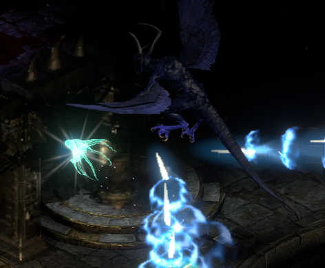 |
En la guerra interminable entre el Cielo y el Infierno, donde ángeles y demonios chocan por el dominio, existe una fuerza que no sirve a ningún bando. Puede que antaño fuera un ángel, un ser de gracia celestial encargado de guiar a los muertos a su más allá. Pero ese propósito se retorció, corrompido por los susurros del Abismo, hasta convertirse en algo completamente distinto: un verdugo frío e imparcial, separado tanto de la luz como de la oscuridad. Espíritu Óseo - El ataque principal del árbitro es un espíritu óseo que inflige muchísimo daño mágico y puede golpear varias veces al mismo objetivo. Ráfaga de lanzas de hueso - El jefe lanza, con un tiempo de reutilización de 4 segundos, una ráfaga de lanzas de hueso que buscan a los enemigos cercanos. Infligen mucho daño mágico y atraviesan a sus objetivos, así que lo mejor es intentar esquivarlas. Tormenta de almas - Rara vez, el jefe alza las almas de los muertos para que busquen a los jugadores cercanos y los destruyan con una cantidad descomunal de daño mágico. Maldición debilitante - Al recibir daño, el jefe puede invocar una maldición del alma. La víctima ve reducida su velocidad de movimiento un 150 % y su resistencia a la magia un 50 %. Recompensas Orbe de Unción (20 % de probabilidad de media) Mapa de nivel 5 (25 % de probabilidad de media) Llave del Pandemonium aleatoria (100 % de probabilidad de media) Otros objetos/materiales genéricos |
|
Mephisto el Invencible - Ojo de la Tormenta 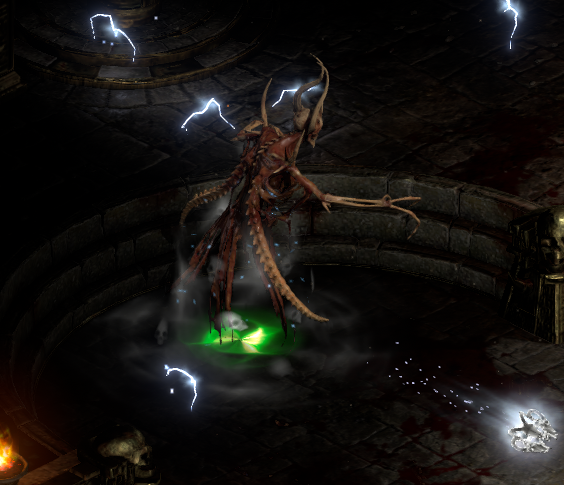 |
Héroes intemporales destrozaron su piedra de alma en la Forja Infernal y vieron cómo el abismo se tragaba los fragmentos. Creyeron haberlo destruido. Pero el odio no se destruye tan fácilmente. En lo más profundo de las venas humeantes del Infierno, donde los ecos del sufrimiento nunca se apagan, los restos de la esencia de Mefisto se pudrían. Aunque su prisión estaba rota, su malicia perduró, aferrada al propio tejido del Infierno. Cada susurro de traición, cada acto de crueldad, cada gota de sangre inocente derramada sobre la tierra alimentó su presencia persistente y reforjó su espíritu en las sombras. Del abismo humeante, se alzó de nuevo. Ya sin estar atado a una piedra de alma ni limitado por las leyes del pasado, Mefisto ha regresado y es más poderoso que nunca. Invencibilidad - Como indica su nombre, Mefisto es completamente invencible ante cualquier daño y sus inmunidades no se pueden romper por los medios habituales. Bomba de veneno - El hechizo de desgaste de Mefisto consiste en lanzar una bomba de veneno que explota al tocar el suelo y aplica un veneno increíblemente potente a todos los que estén en el área. Ráfaga de rayos cargados - Aproximadamente cada 12 segundos, Mefisto lanza una ráfaga de rayos cargados que buscan a los enemigos cercanos e infligen muchísimo daño de rayo. Ráfaga de orbes de hielo - Al acercarte a Mefisto, intentará lanzar, con un tiempo de reutilización de 12 segundos, una ráfaga de orbes de hielo que infligen una cantidad descomunal de daño de frío y físico. Los orbes no se detienen tras un impacto, sino que buscan y golpean a su objetivo varias veces, así que es imprescindible huir de este hechizo. Prisión de ondas de frío - Rara vez, Mefisto lanza 4 ondas de frío que convergen sobre los jugadores desprevenidos e infligen un daño de frío altísimo a cualquiera que se cruce en su camino. Pasivas - Mefisto perfora el 100 % de tus resistencias elementales. Luz del Cielo - No está todo perdido al luchar contra Mefisto. Muy rara vez, tras dañar a Mefisto, las luces del cielo se esparcirán por el campo de batalla. Recoger un orbe de luz te fortalece: tú y las invocaciones afectadas podréis dañar a Mefisto durante un breve periodo. Recompensas Orbe de Unción (25 % de probabilidad de media) Cuerno demoníaco de Mefisto Mapa de nivel 5 (25 % de probabilidad de media) Conjunto de Llaves del Pandemonium (50 % de probabilidad de media) Otros objetos/materiales genéricos |
|
Diablo el Invencible - Ojo de la Tormenta 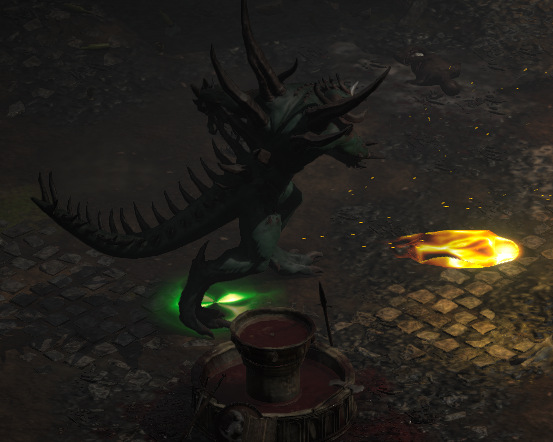 |
De las profundidades del Abismo, donde los cimientos mismos del Infierno arden con más fuerza, el Crisol Infernal, una reliquia antigua más vieja que los propios Males Mayores, empezó a agitarse. Las leyendas dicen que allí se moldearon los primeros demonios, que allí la esencia de la oscuridad tomó forma. Y ahora, atraídos por los ecos de su propio ser destrozado, los restos de Diablo fluyeron hacia sus llamas, reforjando al Señor del Terror en algo mayor, algo irrompible. No surgió como el Diablo de antaño, sino como algo más. Ya sin estar atado a piedras de alma ni ser vulnerable a los rituales de los hombres, es Diablo el Invencible: el terror encarnado, la oscuridad hecha carne, una fuerza de malevolencia pura e imperecedera. Invencibilidad - Como indica su nombre, Diablo es completamente invencible ante cualquier daño y sus inmunidades no se pueden romper por los medios habituales. Lluvia de Meteoros - La habilidad habitual de Diablo invoca meteoros en línea que infligen una cantidad descomunal de daño físico y de fuego. Nova de fuego - Aproximadamente cada 12 segundos, con un aviso sonoro, Diablo libera su nova de fuego más devastadora hasta la fecha. La nova se expande lentamente y deja fuego persistente que inflige un daño de fuego altísimo, así que es imprescindible huir cuando oigas el aviso sonoro. Ráfaga de destrucción - Muy rara vez, Diablo empieza a lanzar una ráfaga de bolas de fuego teledirigidas que hacen caer meteoros del cielo en cada rebote, infligiendo una cantidad descomunal de daño físico y de fuego. Corriente de rayos - Su antiguo hechizo es ahora más poderoso que nunca. Lanza su corriente de rayos cada 6 segundos e inflige una cantidad desorbitada de daño físico y de rayo. Pasivas - Diablo perfora el 100 % de tus resistencias elementales. Ángeles del Juicio Final - No está todo perdido al luchar contra Diablo. Muy rara vez, tras dañar a Diablo (con un tiempo de reutilización de 10 segundos), aparecerán en el campo de batalla ángeles de los Altos Cielos. Cuando el arsenal de Diablo los aniquile, como es inevitable, fortalecerán durante un breve periodo a todos los jugadores cercanos y a sus esbirros, lo que te permitirá dañar al propio Diablo. Recompensas Orbe de Unción (25 % de probabilidad de media) Cuerno Demoníaco de Diablo Mapa de nivel 5 (25 % de probabilidad de media) Conjunto de Llaves del Pandemonium (50 % de probabilidad de media) Otros objetos/materiales genéricos |
|
Baal el Invencible - Ojo de la Tormenta 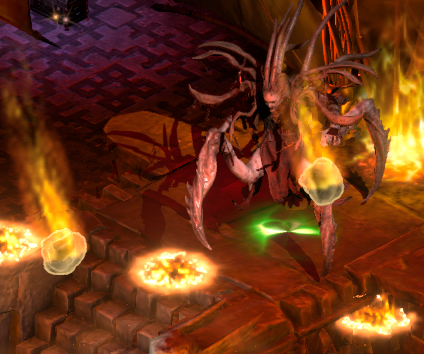 |
El mundo lo creía acabado. Su cuerpo se desmoronó y su esencia se dispersó cuando la Piedra del Mundo se hizo añicos, y su poder ancestral se deshizo en una cascada de ruina celestial. Pero Baal no había perecido: había sido absorbido por el corazón mismo de la creación. Durante años, su esencia permaneció latente, dispersa entre los fragmentos de la Piedra del Mundo. Pero con cada guerra, con cada acto de destrucción sobre Santuario, su poder se fue rehaciendo lentamente, alimentándose del caos, de la ruina, del desmoronamiento del mundo que una vez quiso corromper. Las grietas de la realidad se hicieron más profundas y los ecos de su voluntad susurraron a través del tejido mismo de la existencia. Y entonces llegó la fractura final. Baal se alzó de nuevo, ya sin estar atado a la carne de un Mal Mayor, ya no un simple señor demoníaco. Ahora era algo mayor: algo que ya no pertenecía al Infierno ni a Santuario, sino a los cimientos rotos del propio mundo. Ya no se limita a dirigir la Destrucción: ahora es la Destrucción encarnada, más poderoso que nunca. Invencibilidad - Como indica su nombre, Baal es completamente invencible ante cualquier daño y sus inmunidades no se pueden romper por los medios habituales. Cadena de Rayos - La habilidad principal de Baal es una cadena de rayos que inflige muchísimo daño de rayo, puede rebotar en el aire y busca varias veces a los enemigos cercanos. Ola Fría - Baal tiene una baja probabilidad de invocar su onda de frío más destructiva hasta ahora, que inflige mucho daño de frío y físico. La onda genera periódicamente reverberaciones que buscan a los jugadores cercanos. Prisión de meteoros - Aproximadamente cada 8 segundos, Baal lanza un círculo devastador de meteoros que converge sobre el objetivo desprevenido e inflige un daño físico y de fuego devastador a todos los afectados. Pasivas - Baal perfora el 100 % de tus resistencias elementales. Torre de debilitamiento - No está todo perdido al luchar contra Baal. Aproximadamente cada 13 segundos, Baal invoca torres demoníacas con un devastador ataque de meteoros para que lo ayuden en combate. Al ser destruidas, las torres fortalecen a los jugadores cercanos y a sus esbirros, lo que les permite dañar al propio Baal. Recompensas Orbe de Unción (25 % de probabilidad de media) Cuerno demoníaco de Baal Mapa de nivel 5 (25 % de probabilidad de media) Conjunto de Llaves del Pandemonium (50 % de probabilidad de media) Otros objetos/materiales genéricos |
|
Guardianes del Tiempo - La Ciudadela de la Corona de Hielo (El Borde de la Eternidad) 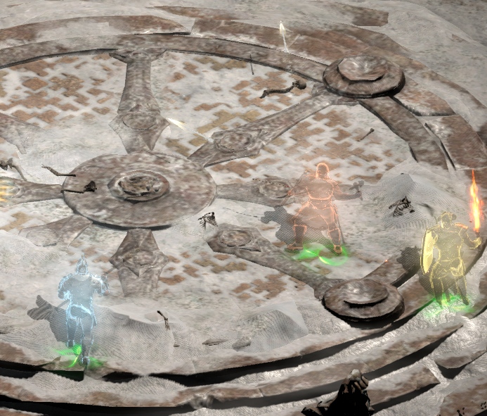 |
Hace mucho tiempo, tres guerreros se alzaban como los últimos guardianes del monte Arreat, juramentados para mantener la Piedra del Mundo lejos de las manos de los indignos. Korlic, Talic y Madawc, campeones de una era ya pasada, se enfrentaban a todos los que osaban entrar. No los movía el odio ni la conquista: los ataba el deber, un juramento sagrado que trascendía incluso la muerte. Pero el deber es un amo cruel. Cuando la Piedra del Mundo se hizo añicos, el poder que protegían se perdió, y con él su propósito. Sus cuerpos se desmoronaron y sus espíritus se disolvieron en el vacío… o eso creyó el mundo. Lo que los nephalem no sabían era que los Antiguos nunca fueron realmente mortales. Durante siglos que pasaron en un instante, vagaron fuera de la realidad, viendo cómo Santuario se hundía cada vez más en la corrupción. Vieron a la humanidad, los hijos mismos de la Piedra del Mundo, abandonar su propósito y blandir su prohibido poder nephalem como si fueran dioses. Vieron las guerras, la traición, la destrucción temeraria del equilibrio que antes era sagrado. Y en el vacío echó raíces un nuevo propósito. Los Antiguos no regresaron como protectores. Regresaron como verdugos. Invencibilidad - Los Antiguos regresados son seres de un poder inmenso que controlan el propio tiempo. Sus ataques infligen a partes iguales daño físico y mágico. No puedes dañarlos por los medios habituales. Korlic Cataclismo - Korlic lanza de vez en cuando un ataque devastador que hace llover una avalancha de rocas del cielo e inflige un daño físico inmenso a todos los afectados. Hachas convergentes - A veces hace aparecer de la nada hachas que convergen sobre su objetivo. Quien quede en medio encontrará una muerte rápida. Pasivas - Al recibir daño, Korlic puede cargar contra el enemigo. Luz del Cielo - Al dañar a Korlic, hay una pequeña probabilidad de que el cielo intervenga e invoque bolas de luz pura. Al tocarlas, tú y los aliados cercanos afectados quedáis fortalecidos. Talic Prisión de hachas - Talic invoca a veces varias novas de hachas que buscan al objetivo desprevenido e infligen un daño físico y mágico masivo. Péndulo Eterno - Al atacar cuerpo a cuerpo, Talic puede invocar Péndulos Eternos. Los Péndulos invocan las arenas del tiempo, que buscan a los enemigos cercanos, infligen un daño físico devastador y aturden al objetivo durante un breve tiempo. Al destruir el Péndulo, tú y los aliados cercanos quedáis fortalecidos. Madawc Hacha mágica - El ataque principal de Madawc es un hacha mágica que persigue a los objetivos cercanos e inflige un daño mágico y físico devastador. Ráfaga de hachas mágicas - De vez en cuando, Madawc se enfurece y empieza a lanzar hachas mágicas a toda velocidad. Nova de hachas mágicas - Muy rara vez, Madawc recurre al poder del propio tiempo e invoca una nova devastadora de hachas mágicas que quedan clavadas en las paredes y buscan a los jugadores cercanos tras un breve tiempo. Atemporal - Los Antiguos regresados están furiosos por el estado de Santuario, lo que los hace absolutamente inmortales ante cualquier daño. Cuando tengas a la vez los efectos fortalecedores del Péndulo Eterno y de la Luz del Cielo, podrás dañarlos. Recompensas Orbe de Unción (16.67 % de probabilidad de media cada uno) Reloj de arena eterno de las arenas intemporales (Amuleto Grande único) (tienes que matarlos a todos para forjarlo) Mapa de nivel 5 (17 % de probabilidad de media cada uno) Llave del Pandemonium aleatoria (100 % de probabilidad de media cada uno) Otros objetos/materiales genéricos |
|
El Rey Lich - La Ciudadela de la Corona de Hielo (El Trono Helado) 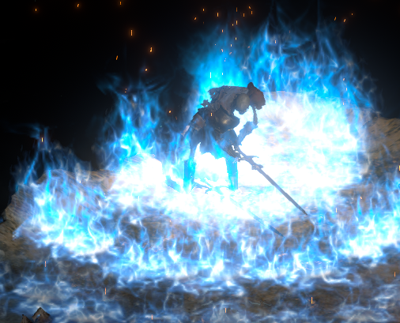 |
Las fronteras entre los mundos no son tan irrompibles como creían los eruditos de Santuario. La Piedra del Mundo era el ancla de la realidad, una barrera divina que separaba Santuario de la influencia tanto de los Altos Cielos como de los Infiernos Abrasadores. Pero cuando Tyrael la destrozó, esa barrera quedó debilitada para siempre. Y algo más se dio cuenta. Mucho más allá de los reinos del Conflicto Eterno, en un mundo consumido por la guerra y la muerte, el Rey Lich reinaba en un frío silencio. Su dominio era absoluto y sus legiones, infinitas, pero el hambre de conquista no conoce fronteras. Porque la muerte no se limita a un solo mundo, y el poder de la destrucción de la Piedra del Mundo resonó a través del vacío entre realidades, llamando a algo que escapa a la comprensión de Santuario. El Rey Lich no busca quemar el mundo como los Males Mayores, ni corromperlo con mentiras. Busca reclamarlo. Los Infiernos Abrasadores se deleitan en el caos; él impone el orden a través de la muerte. Los Cielos luchan por la justicia; él cree que la justicia es una ilusión. Para él, todo acaba en la no muerte, e incluso los ángeles y demonios que guerrean desde tiempos inmemoriales se inclinarán ante el silencio helado de la eternidad. Si no pones fin a su reinado, esclavizará a todo Santuario. Este es el fin de todas las cosas. Frío convergente - La habilidad habitual del Rey Lich es una nova convergente de 6 púas de frío que inflige muchísimo daño de frío y físico a cualquiera que alcance. Nova de frío - La habilidad secundaria del Rey Lich es una onda de frío rápida que invoca un orbe helado por cada enemigo alcanzado. El orbe explota tras 1 segundo, inflige un daño de frío descomunal a todo lo que haya en un radio de 5 metros y congela durante 2 segundos. Abalanzarse - Aproximadamente cada 10 segundos, el Rey Lich asalta a un objetivo desprevenido, liberando una nova de energía pura que repele a los enemigos cercanos, seguida poco después de Invierno Eterno. Al mismo tiempo, invoca 2 valquirias. Invierno Eterno - Rara vez, además de lo que sigue a Abalanzarse, el Rey Lich libera una nova mortal de fuego azul que absorbe el alma de todos los afectados, inflige un daño físico y de frío altísimo, reduce la resistencia al frío un 150 % y la resistencia física un 75 % y ralentiza a los jugadores afectados hasta casi detenerlos. Este hechizo se anuncia con un aviso sonoro. Invocar no muertos - Aproximadamente cada 20 segundos, el Rey Lich invoca 4 necrófagos y 1 abominación para que lo ayuden en combate. Trampa de sombras - Al recibir daño, el Rey Lich puede invocar una trampa de sombras bajo el jugador que lo ataca. Tras un breve periodo, la trampa se arma y libera una ola de Invierno Eterno fuegos en cuanto alguien la pisa. Necrófagos Los necrófagos poseen el espíritu de los no muertos y se regeneran muy rápido. También pueden cargar contra su objetivo al recibir daño. Abominaciones La abominación es inmune a todo el daño y su inmunidad no se puede romper por los medios habituales. Al recibir daño, la abominación puede enfurecerse, aumentando su daño o su velocidad de movimiento. Muy rara vez, al recibir daño, la abominación hará que los cielos ayuden al jugador en combate, enviando la Luz del Cielo. Al recoger la luz, el jugador puede dañar a la abominación y matarla. Valquirias Las valquirias infligen mucho daño físico y de frío. Al matarlas, fortalecen a los jugadores cercanos con la Esperanza de la Luz. Atemporal - Al ser un ser de fuera del espacio y el tiempo de Santuario, el Rey Lich es absolutamente inmortal ante el daño de este mundo. Para poder dañarlo, necesitas tener a la vez los efectos de Esperanza de la Luz and Luz del Cielo. Variante über - Jugar este combate con /players 8 activará la variante über, y todos los enemigos se fortalecerán de la siguiente manera. El Rey Lich - El Rey Lich invoca 3 veces más necrófagos y abominaciones. Necrófagos - Los necrófagos ahora se enfurecen con cada golpe y obtienen un 25 % de daño físico y de frío. Este efecto es acumulable. Valquirias - El Rey Lich invoca 6 valquirias en lugar de 2, y estas infligen el doble de daño. Recompensas Orbe de Unción (50 % de probabilidad de media) Único mítico especial Mapa de nivel 5 (50 % de probabilidad de media) Conjunto de Llaves del Pandemonium (100 % de probabilidad) Otros objetos/materiales genéricos Recompensas (variante über) Si consigues matar al Rey Lich con /players 8, podrás transmutar tu Piedra de Ascendencia con un Runa Nula para obtener una bonificación +1 a Todas las Habilidades. Esta receta solo se puede hacer una vez. |
|
Rathma - El Santuario de los Muertos (La Basílica Crepuscular) 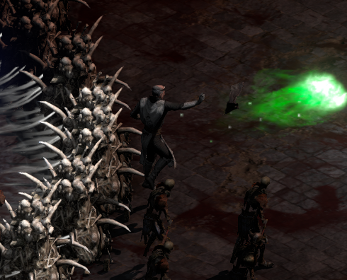 |
Bajo la luz moribunda de Santuario, los héroes descendieron al Santuario de los Muertos, un laberinto de huesos y ceniza susurrante enterrado en lo más profundo del inframundo. El aire resplandecía con almas atrapadas, cuyo pálido brillo teñía el mármol negro de tonos espectrales. Venían en busca de Rathma, el Primer Nigromante. Antaño guardián del equilibrio, ahora su traidor. El equilibrio al que servía se había marchitado hasta convertirse en obsesión: buscaba deshacer la muerte, dominar los dos extremos de la eternidad. A su lado estaba Kor'nac, el Apóstol Hueco, su retornado más leal, envuelto en las vestiduras de una fe olvidada. La carne se le desprendía de los huesos, y cada palabra grabada en su carne latía con una gracia prohibida. Su voz era un canto fúnebre que hacía flaquear incluso a los espíritus. El acero, la llama y la fe se enfrentaron a la sombra y la decadencia en aquel lugar donde la vida no tenía sentido. Los héroes sabían que no se enfrentaban solo a la muerte, sino a su arquitecto. Rathma Velo de los muertos - Rathma emite un aura que impide a los héroes usar habilidades de teletransporte. Ráfaga de lanzas de hueso / Iras venenosas - Rathma alterna entre una ráfaga de 3 lanzas de hueso y una ráfaga de 3 iras venenosas, que infligen respectivamente un daño mágico y de veneno devastador. Espíritu Óseo - Rara vez, Rathma lanza un espíritu óseo que se acelera con el tiempo. Al impactar, inflige un daño mágico altísimo. Prisión de Huesos - Aproximadamente cada 20 segundos, si estás relativamente cerca de Rathma, alzará a tu alrededor un laberinto de huesos con pocas salidas. Si no escapas a tiempo del laberinto, hará detonar la zona, matándote al instante . Después de detonar la zona, alza a los Muertos Vivientes del suelo profanado. Invocar efigies marchitas - Cada 20 segundos, Rathma alza 4 efigies marchitas que lanzan sobre el jugador un perjuicio acumulable, que reduce su resistencia a la magia y su velocidad de movimiento. Si las matas antes de que se desmoronen por sí solas, tú y los aliados cercanos quedáis fortalecidos durante 10 segundos. Kor'nac, El Apóstol Hueco Kor'nac es el siervo más leal de Rathma y lo ayuda en combate en todo momento. Golpe devastador - De vez en cuando, Kor'nac golpea el suelo y envía ondas de choque devastadoras que infligen un daño físico altísimo. Odio creciente - Con el paso del tiempo, Kor'nac se vuelve más poderoso, gana velocidad de movimiento y mejora su golpe. Muertos Vivientes Los Muertos Vivientes no son difíciles de eliminar, pero tienen una pequeña probabilidad de cargar contra el enemigo al recibir daño. Alma Ardiente - Al morir, los muertos vivientes dejan atrás su alma agonizante. Recogerla te fortalece durante 10 segundos. Atemporal - Rathma es el amo de los no muertos y ha alcanzado un poder ilimitado que lo hace invencible. Solo con el fortalecimiento de las efigies y de las almas de los muertos vivientes podrás dañarlo. Rathma extiende su aura de invencibilidad a su siervo de mayor confianza, Kor'nac. Variante über - Jugar este combate con /players 8 activará la variante über, y todos los enemigos se fortalecerán de la siguiente manera. Rathma - Al llegar al 25 % de su vida actual, Rathma se enfurece, envía ondas de choque por toda el área, gana velocidad de lanzamiento y hace llover meteoros que infligen un daño físico y de fuego devastador. Los Muertos Vivientes - Los Muertos Vivientes también obtienen un 500 % de daño adicional al cargar, y su efecto de carga dura el triple. Kor'nac, El Apóstol Hueco - Kor'nac se enfurece el doble de rápido. Recompensas Orbe de Unción (50 % de probabilidad de media) Cráneo Eterno de Rathma (Amuleto Pequeño único) Mapa de nivel 5 (50 % de probabilidad de media) Conjunto de Llaves del Pandemonium (100 % de probabilidad) Otros objetos/materiales genéricos Recompensas (variante über) Si consigues matar a Rathma y a Kor'nac, el Apóstol Hueco, con menos de un minuto de diferencia, podrás transmutar el Cráneo Eterno de Rathma consigo mismo para obtener las siguientes bonificaciones: Resistencia mágica +5% +5% a la Resistencia Máxima al Veneno +(10 a 20) a Levantar a Kor'nac |
|
Solución - El Altar de la Salvación Condenada (El Reliquario de Luz Falsa) 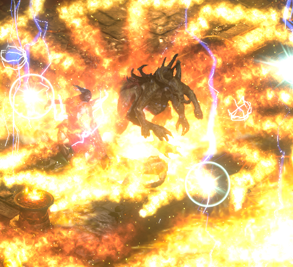 |
Lucion, hijo de Mefisto y hermano de Lilith, fue desterrado al abismo tras su fallido intento de esclavizar Santuario bajo un orden demoníaco. Pero el mal puro nunca muere: se pudre. A través de la fe corrupta de un culto olvidado, la esencia de Lucion se reavivó en secreto, con su alma atada a las brasas de un mundo moribundo. Ahora, renacido en forma de llama viviente, busca vengarse de los vivos, convencido de que el reino mortal debe arder como crisol de una nueva creación forjada a su imagen. Cada alma consumida fortalece su luz infernal y alimenta un fuego que amenaza con devorar toda la existencia. Solo cortando su vínculo con el plano mortal y extinguiendo el núcleo infernal que lo alimenta se puede detener a Lucion. Si ascendiera más allá de su forma actual, incluso los Males Mayores temblarían ante su ira. Solución Tormenta de Fuego - Uno de los ataques habituales de Lucion es una tormenta de fuego devastadora que quema todo a su paso tras 1 segundo. Línea de meteoros - Lucion alterna su Tormenta de fuego con un ataque que invoca una línea de meteoros que infligen un daño de fuego y físico inmenso. Abalanzarse ígneo - Aproximadamente cada 10 segundos, Lucion se abalanza sobre un objetivo desprevenido y libera una devastadora nova de fuego convergente. Los proyectiles de fuego convergen tras un breve periodo e infligen el triple de daño que la nova inicial, así que hay que esquivarlos a toda costa. Tras saltar, Lucion también invoca 4 altos sacerdotes para que lo ayuden en combate. Estampida de fuego - Cada vez que Lucion se abalanza, invoca una tempestad de proyectiles de fuego que llenan la sala. Los proyectiles infligen un daño de fuego devastador. Invocar fanáticos religiosos - Rara vez, Lucion invoca 10 fanáticos religiosos para que lo sirvan en combate. Los fanáticos aplican un perjuicio acumulable que aumenta el daño físico y elemental recibido. Llamas purificadoras - Aproximadamente cada 8 segundos, Lucion hace aparecer llamas purificadoras a su alrededor que infligen un daño moderadamente alto a quien las toque. Entrar en ellas te fortalece durante 4 segundos. Altos sacerdotes Los altos sacerdotes son lanzadores de hechizos muy especializados al servicio de Lucion. Bola ígnea - Su ataque habitual es una bola de fuego que abrasa el suelo al impactar e inflige mucho daño de fuego. Fortalecimiento demoníaco - De vez en cuando, fortalecen a los aliados cercanos, aumentando su daño y su velocidad de ataque/lanzamiento un 3 %. Este efecto es acumulable. Fortalecimiento de luz - Al morir, los altos sacerdotes fortalecen a los jugadores cercanos. Fanáticos religiosos Los fanáticos religiosos son siervos extremadamente agresivos de Lucion. Pico Glacial/Rayo - Cuando no corren hacia ti para despedazarte, lanzan un hechizo de frío/rayo muy dañino que lo atraviesa todo. Atemporal - Lucion es una bestia infernal de un poder inmenso, lo que lo hace invencible a los ataques normales. Para poder dañarlo, necesitas tener a la vez los efectos de Fortalecimiento de luz and Llamas purificadoras. Variante über - Jugar este combate con /players 8 activará la variante über, y todos los enemigos se fortalecerán de la siguiente manera. Solución - Lucion emite un aura demoníaca que cada 20 segundos aumenta su daño y el de sus aliados un 5 % y su velocidad de ataque y de lanzamiento un 2 %. Este efecto se acumula indefinidamente. Altos sacerdotes - La mejora de los altos sacerdotes es ahora el doble de potente y aumenta el daño y la velocidad de ataque/lanzamiento un 6 % en lugar de un 3 %. Fanáticos religiosos - Lucion invoca 20 fanáticos religiosos en lugar de 10. Recompensas Orbe de Unción (50 % de probabilidad de media) Reliquia ígnea de Lucion (consulta la sección Componentes legendarios para ver la lista de bonificaciones) Mapa de nivel 5 (50 % de probabilidad de media) Conjunto de Llaves del Pandemonium (100 % de probabilidad) Otros objetos/materiales genéricos Recompensas (variante über) Si consigues matar a Lucion con /players 8, soltará su esencia (Esencia de Lucion). La esencia es una versión más poderosa de un Donut de Socket. |